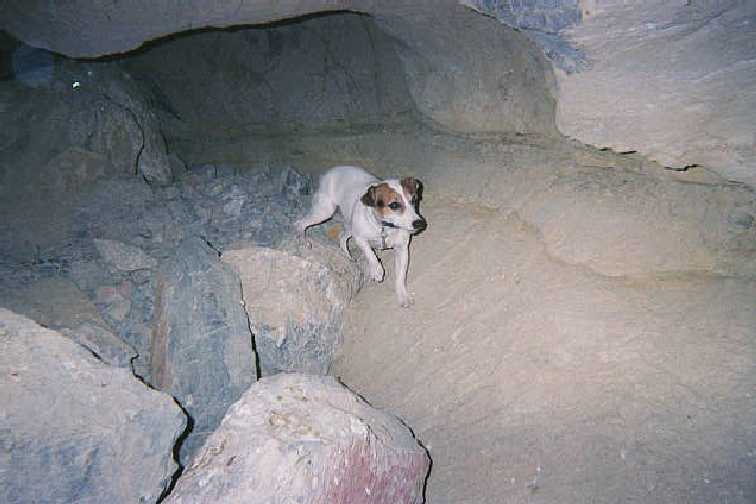
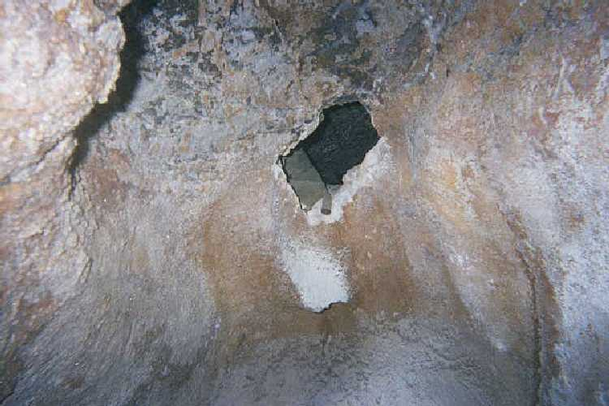

Scarcely two weeks had gone by and already we were on our way back out to work in the cave. We admit we have become obsessed with the idea of getting through the passage. That may be a sign of how exciting our lives really are. It's not that we think there is going to be something great beyond the passage. We just like the idea of being the first humans on the face of the planet to set foot in a virgin part of the cave. Although if we found a hidden treasure that would be fine with us!
We got a late start and drove part of the way in the dark. When I tell people that I go caving at night they wonder why. They don't stop to think that it is always night once you're inside the cave. All the way out to Mystery Cave we talked about new ideas to speed up our work. B also told me he talked to some caver friends of his that came up with an explanation about the rumbling noise. They thought it might be the sound of water deep within the cave. Possibly a waterfall. They couldn't really explain why the noise seemed to come and go. To me it is just one more reason to get through. So we can solve the mystery.
This trip we took B's dog, Whip. She is a Jack Russell Terrier. I was not at all concerned about taking the dog into the cave. We have taken her before. She answers the call of nature before we go in, and then waits until we get out again. Also she is well behaved inside the cave. We simply had to lower her via a custom made harness until she reached the bottom of the main drop. Then she negotiated the rest on her own. She loves to explore, but won't go out of our sight. She doesn't have a light attached to her, so she has to wait for us. Another reason I didn't mind bringing Whip along was because we planned on putting her into the small hole and see how far into the passage she would go. That might give us an idea what is on the other side. We knew that if there were a drop-off that we couldn't see, the dog would turn around and come right back out. We thought we might have to do some work on the hole before even the dog could get through.

a picture of B's dog, "Whip", near the entrance to the cave
Despite working in the dark of the night we were able to rig up and get down pretty quickly. We didn't take as many tools as last time. Plus, we left some in the hole so we wouldn't have to haul them out and back in again. I did manage to get two more batteries for the drill for a total of four. Also a few more masonry drill bits. Even with the dog we made good time getting down. Then something bizarre happened that I can't quit explain.
The dog began exploring as soon as we let her off the rope. She was in hog heaven, sniffing and darting about around our feet. She would run from one person to the other as we made our way back to the work site. At the point the cave splits into four passages the dog seemed to run out of juice. She just stuck right by either B or me. That seemed kind of odd. As we progressed further into the cave she would only stay by B. She seemed edgy. Like she saw something she didn't like. As we approached the short drop-off before the hole, she stopped and would only come further after we coaxed her. The hair on her back stood on end. Finally, as we got to within 20 feet of the hole she began to whimper, and hide behind B. Her tail was between her legs and she was cowering down on the ground. Strange! I have seen her square off with dogs twice her size, but now she acted as if Satan himself was lurking in the darkness. I figured there must have been animals that used the cave as a home, and Whip smelled their scent. Too bad it upset her, because there was no way she was going into the passage.
We decided that with this new development (the nervous dog) one of us would work while the other stayed with the dog a few feet away from where we normally rested. We got right back into our routine of drilling, hammering, etc. With our extra supply of batteries we were able to really push hard on the drill and not have to worry about using up the batteries. This did not make our work any easier, but it did speed things up a little bit. Progress was still SLOW. I really didn't mind, though.
We were on our fourth battery when the second bizarre thing happened to us. B was working. He had just finished drilling a hole and was getting ready to hammer the bullpin when he stopped working and looked into the hole. I was kicking back, almost asleep, and hardly paying attention to B. He had a light by his side to illuminate the work area. I could see in the eerie glow a puzzled and intense look on his face. He looked over at me and shook his head. I asked him what was up. He said that he swore he just heard a strange noise emanating from the hole. He said it sounded like rock sliding on rock. Sort of a grinding sound. I assumed his ears were just ringing from the drill (he didn't wear any earplugs this trip). He assured me he heard what he said he heard. I didn't have an explanation, so I went back to dozing. B sat in the quiet of the cave for a long time before he resumed work. Also, he would stop from time to time and just listen. B is very grounded and not one to pursue some imaginary sound. I believe he heard something, but I'm not too concerned about what it was. I assume we will figure it all out once we get through the passage.
The final battery lasted another hour or so. We were sitting around talking about our progress when I decided to see if I could get my head through the hole. My head easily fit, but there was no way my shoulders were going in. As I was kneeling there contemplating how close we were I noticed something that B overlooked: The wind had stopped! In all of the times I've been in the cave I have always felt the wind blowing. The last time we were out working on the cave the wind was blowing worse than ever. Even earlier we remember the breeze cooling us off. But now, nothing! B said he did not know when it stopped. The rumbling had ceased, too. BIZARRE!
This plain old cave was becoming mysterious. We talked for a long time in the dark of cave. We debated what could possibly be causing these unusual events to occur. I think part of the reason we were sitting in the dark was because we were both too hammered to move. We could come up with no reasonable explanation for the strange things happening in the cave. After sitting for at least a half-hour we slowly loaded up our gear and started for the surface. Whip couldn't have been happier to get out of there. Once again we left some of the tools in the cave. We just put them in the hole. Not enough people use the cave to worry about. Plus, we were too tired to care.
We made a lot of progress this trip. It helps to have the extra batteries. We still have a long way to go, but it sure is nice to see how far we have come.

our progress on the hole